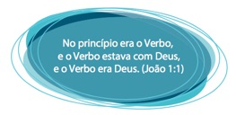

Olá, caríssimo aluno!
Hoje daremos início a uma viagem de retorno à sua adolescência para relembrar assuntos mal resolvidos que possam ter gerado traumas profundos em sua psiquê. Para isso, peço que responda às seguintes perguntas:
- Você já saiu de uma aula sem entender exatamente por que entrou nela?
- Por acaso, alguma aula que teve a ver com língua portuguesa?
- Tinha gramática envolvida?
- Era de orações?!
- Período composto?!!...
Não, eu não sou adivinha. Mas o fato é que a grande maioria das pessoas não consegue entender por que está sendo submetida a uma tortura de análise sintática por anos a fio. Bem, não cabe aqui dissertar sobre a inadequação do currículo escolar e da prática pedagógica em língua portuguesa, mas vale lembrar que, nesta aula de hoje, tudo que você verá conduzirá suas mãos e seu cérebro para um único objetivo: a produção de mensagens claras ao leitor.
O que tenho percebido em textos jurídicos é que a pontuação das orações adjetivas é um calo bastante considerável. Por isso, resolvi atacar o mal pela raiz, oferecendo algumas explicações da forma mais objetiva possível. Entretanto, alguns termos terão de ser assimilados por você antes que adentremos o maravilhoso, porém nada mágico, mundo das vírgulas, pois sem eles o processo se torna muito intuitivo, e não é de intuição que estamos tratando aqui.
Como afirmei no Preâmbulo do curso, vamos falar de orações subordinadas adjetivas. Para isso, precisamos entender duas questões:
1ª O que é uma oração;
2ª O que é uma oração subordinada.
A primeira é muito fácil. E a segunda também.
Então, vamos começar os nossos estudos?
1.1 Orações

Religião à parte, o verbo será nosso deus neste curso. Foca no verbo! A quantidade de verbos1 em um período dirá a você a quantidade de orações dentro dele. Perceba que usei o termo período e não frase. O uso foi proposital, pois existe uma diferença entre os dois, e essa diferença está no... VERBO.
1 Lembre-se de que as locuções verbais equivalem a um verbo!
Frase é a expressão linguística oral ou escrita com vistas à comunicação. Para essa expressão concorrem, além dos recursos linguísticos, a situação, o contexto, os gestos, a expressão sionômica, a entoação, as pausas etc. A frase escrita, que se estrutura segundo os padrões sintáticos da língua, é delimitada por uma letra inicial maiúscula e um ponto, qualquer que seja ( nal, de interrogação, de exclamação, reticências ou dois pontos). A frase oral utiliza os recursos extralinguísticos (situação, gestos, pausas etc.); (...).2
2 HAUY, 2014, p. 1047.
Resumindo e facilitando:
“frase é todo enunciado suficiente por si mesmo para estabelecer comunicação”3.
3 GARCIA, 1976, p. 6.
Logo, se em uma placa afixada em uma porta está escrito “Perigo!”, temos diante de nós uma frase. Mesmo que constituída por uma palavra apenas, ela encerra um sentido completo em si. Você consegue entender que não é para se aproximar, pois poderá se ferir. A esse tipo de frase, damos o nome de frases de situação ou articuladas. Nesses casos, o contexto linguístico ou físico e social atribuem significado à estrutura, de modo que ela adquire sentido completo e, portanto, status de frase. São exemplos de frases de situação:
Outro tipo de frase é denominada nominal. Nela, um conjunto de nomes (substantivos, pronomes e adjetivos) se relacionam constituindo uma mensagem completa. Nesses casos, apesar de o verbo não estar presente, ele pode ser deduzido, como no caso abaixo:
Casa de ferreiro, espeto de pau. (Em casa de ferreiro, o espeto é de pau.)
Em geral, os autores de livros didáticos de português agrupam toda frase sem verbo no grupo das nominais, diferenciando-as apenas das verbais.
Mas como é o verbo o nosso foco, não são as frases nominais que nos interessam. Estamos interessados naquelas que possuem verbo, certo? Frases que possuem verbo são chamadas de... períodos! Logo, todo período é uma frase, mas nem toda frase é um período, pois nem toda frase possui verbo.
Os períodos podem ser classificados como simples, quando apresentam um núcleo verbal (um verbo ou uma locução verbal) apenas:
Minha mãe é uma peça.
Ou compostos, quando apresentam dois ou mais núcleos verbais:
Não fui ao seu encontro porque meu sapato furou.
A quantidade de núcleos verbais nos diz a quantidade de orações.
Mas o que é uma oração?
“Uma estrutura sintático-semântica cujo termo central, fundamental, que é o verbo (regente, subordinante), conecta os demais termos (regidos, subordinados).”4
4 HAUY, 2014, p. 1052
Lembra quando seu professor dizia que “a oração tem sujeito e predicado”? Então, é mais ou menos por aí, pois nem sempre há sujeito, mas sempre há o predicado, porque a oração sempre gira em torno dele, do verbo. Por exemplo, leia o período abaixo:
Há esperança em que o leitor atente para os detalhes daqui para a frente.
Vamos separar as orações?
- Há esperança
- em que o leitor atente para os detalhes daqui para a frente.
Você se recorda da regra que diz “verbo haver no sentido de existir não tem sujeito”? A primeira oração se insere nesse caso, logo não possui sujeito. Ela apenas apresenta predicado.
Agora vamos ver se a segunda oração possui sujeito. Para descobri-lo, faça uma pergunta usando o verbo da oração:
Pergunta: Quem deve atentar para os detalhes?
Resposta: O leitor.
Logo, “O leitor” é o sujeito da oração.
O predicado, portanto, será o resto da oração: “atente para os detalhes daqui para a frente”.
SAIBA MAIS
Para uma compreensão mais detalhada dos tipos de sujeito, visite o site da Infoescola. Para um aprofundamento nos estudos sobre o predicado, assita à videoaula do professor Je erson Evaristo, no Youtube.
Como nossa aula está focada na oração, vamos adiante. O que nos interessa a partir de agora é compreender a relação sintática entre as orações.
1.2 Orações coordenadas X subordinadas
Vamos voltar ao período composto citado no início desta aula:
Não fui ao seu encontro porque meu sapato furou.
Observe que há dois verbos nele (fui e furou), certo? Logo, há duas orações. Essas orações se relacionam entre si, e a relação está evidenciada pela conjunção porque. A causa de a pessoa não ter ido ao encontro foi o sapato ter furado. Logo uma oração é causa da outra.
As relações entre as orações podem ser de independência sintática ou de dependência. Quando ocorre independência sintática, há o que chamamos de coordenação entre a oração. Nesse caso, as orações são chamadas de coordenadas. Veja um exemplo:
O relógio da rua marcava 40º, mas eu tirintava de frio.
Vamos analisar passo a passo:
- Marcar os verbos presentes no período:
O relógio da rua marcava 40 ºC, mas eu tirintava de frio.
- Separar as orações:
1ª - O relógio da rua marcava 40 ºC
2ª - mas eu tirintava e frio
- Conferir se as orações estão completas sintaticamente. Para isso, faça perguntas usando os elementos da própria oração. Se você obtiver as respostas com elementos que também estão presentes na mesma oração, o resultado é positivo:
1ª oração:
Pergunta: Quem marcava 40 ºC?
Resposta: O relógio.
Pergunta: Marcava o quê?
Resposta: 40 °C.
Precisa de mais alguma pergunta? Não. Então a oração está completa sintaticamente.
2ª oração:
Pergunta: Quem tirintava de frio?
Resposta: Eu.
Pergunta: Eu tirintava de quê?
Resposta: De frio.
Precisa de mais alguma pergunta? Não. Então a oração está completa sintaticamente.
- Classificar as orações quanto à coordenação e/ou subordinação:
No caso, as duas orações são independentes sintaticamente; portanto, elas são coordenadas entre si.
Perceba que o tempo todo falo que a independência é sintática. Por quê? Porque existe uma relação semântica entre as orações coordenadas. No caso acima, uma oração se contrapõe à outra. A ideia de fazer 40 °C é oposta à de tirintar de frio. Logo, há uma relação semântica entre as duas orações, mas uma independência sintática, pois uma oração não exerce uma função sintática que esteja faltando na outra.
As orações coordenadas podem ser ligadas apenas por vírgulas:
Ele pediu um café, ela o entregou com desdém.
Ou ainda podem apresentar um conectivo, uma conjunção, unindo as duas:
O relógio da rua marcava 40º, mas eu tirintava de frio.
No primeiro exemplo, como não há um conectivo, uma conjunção – também chamada síndeto –, denominamos as duas orações relacionadas de assindéticas. Já no segundo exemplo, como há síndeto na segunda oração, chamamos a primeira oração de assindética – pois não possui síndeto – e a segunda oração de coordenada sindética.
É a relação semântica entre as orações que determina a classificação dos diferentes tipos de coordenadas sindéticas. Por exemplo, quando a segunda oração se opõe à primeira, aquela é classificada como coordenada adversativa; quando explica a primeira, é explicativa; quando conclui a primeira, é conclusiva. São cinco as orações coordenadas sindéticas. No esquema abaixo, estão definidos os tipos e as conjunções características de cada uma delas, seguidos por um exemplo:
| Tipo de Oração Coordenada Sindética | Principais conjunções | Exemplo |
|---|---|---|
| Aditiva | e, nem | Corria e comia ao mesmo tempo. Não comeu nem bebeu nada o dia todo. |
| Adversativa | mas, porém, contudo, entretanto, no entanto, todavia e | Saiu cedo, porém voltou tarde. Saiu cedo e voltou tarde. |
| Alternativa | ora... ora, nem... nem, quer... quer | Ora corre um pouco, ora come um pouco. Nem corre, nem come. Quer queira, quer não queira. |
| Conclusivas | logo, pois | Estava muito quente, logo não levei casaco. Estava muito quente, não levei, pois o casaco. |
| Explicativas | porque, que, pois | Não se esqueça do casaco, pois está frio! |
Se orações coordenadas são independentes sintaticamente, ou seja, uma oração não exerce uma função sintática que está faltando na outra, então, o que temos quando uma oração exerce uma função sintática necessária em outra? Temos a subordinação.
Logo:
Orações independentes sintaticamente = orações coordenadas
Orações dependentes sintaticamente = orações subordinadas
Veja o exemplo abaixo:
Eu não suporto que faltem a um encontro sem aviso.
No período acima, há dois verbos: suporto e faltem. Logo, há duas orações. Para separar as orações, vamos visualizar os verbos e as palavras diretamente a eles relacionados:
Como você já notou, temos duas orações: “Eu não suporto” e “faltem a um encontro sem aviso”. Ambas estão ligadas pela conjunção “que”, denominada nesse caso conjunção integrante. Para facilitar a visualização, vamos colocar uma barra separando as duas orações, deixando a conjunção unida à segunda oração.
Agora vamos fazer as perguntas para o verbo da primeira oração:
Pergunta: Quem não suporta?
Resposta: Eu.
Pergunta: Eu não suporto o quê?
Resposta: que faltem a um encontro sem aviso.
Veja que respondemos a pergunta usando toda a segunda oração. Logo a segunda oração exerce a função sintática que está faltando na primeira oração.
No caso acima, a pergunta que fizemos ao verbo suportar serve para identificar um complemento desse verbo, seu objeto direto. A segunda oração toda é esse objeto. A segunda oração está, dessa forma, subordinada sintaticamente à primeira, que é chamada de subordinante, ou melhor, oração principal. A segunda é a oração subordinada substantiva objetiva direta da primeira, porque exerce a função de um objeto direto, função típica de um substantivo.
Segura na minha mão para praticar!
Vamos analisar os períodos abaixo:
I - Ele não respondeu minha mensagem, nem retornou minha ligação.
- Destacar os verbos:
Ele não respondeu minha mensagem, nem retornou minha ligação.
- Separar as orações:
1ª Ele não respondeu minha mensagem
2ª nem retornou minha ligação.
- Fazer perguntas para ver se falta alguma função sintática nas orações:
1ª oração:
Pergunta: Quem não respondeu minha mensagem?
Resposta: Ele.
Pergunta: Não respondeu o quê?
Resposta: Minha mensagem.
2ª oração:
Pergunta: Que não retornou minha ligação?
Resposta: (Ele) – o termo está implícito para evitar repetição no texto, mas existe.
Pergunta: Não retornou o quê?
Resposta: Minha ligação.
- Verificar se alguma oração exerce função sintática necessária à outra:
Não exerce
- Classificar o período quanto à coordenação ou subordinação:
Se as duas orações são independentes sintaticamente, o período é composto por uma coordenação.
- Classificar os tipos de oração:
1ª oração: não possui síndeto (conjunção) = oração coordenada assindética
2ª oração: possui síndeto com ideia de adição = oração coordenada sindética aditiva.
Segura na minha mão para praticar!
II - Era óbvio que ele faltaria ao evento.
- Destacar os verbos:
Era óbvio que ele faltaria ao evento.respondeu
- Separar as orações:
1ª Era óbvio
2ª que ele faltaria ao evento.
- Fazer perguntas para ver se falta alguma função sintática nas orações:
1ª oração:
Pergunta: O que era óbvio?
Resposta: Que ele faltaria ao evento.
Pergunta: Isso (que ele faltaria ao evento) era o quê?
Resposta: Óbvio.
2ª oração:
Pergunta: Quem faltaria ao evento?
Resposta: Ele.
Pergunta: Faltaria a quê?
Resposta: Ao evento.
- Verificar se alguma oração exerce função sintática necessária à outra:
Sim, exerce. A 2ª oração toda é o sujeito da primeira.
- Classificar o período quanto à coordenação ou subordinação:
Se a 2ª oração é dependente sintaticamente da primeira, o período é composto por uma subordinação.
- Classificar os tipos de oração:
1ª oração: subordinante = oração principal.
2ª oração: subordinada, exerce uma função sintática necessária à outra oração = oração subordinada substantiva subjetiva.
1.3 Recapitulando
Para finalizar esta aula, vamos retomar os dados fundamentais.
Você precisa perceber por agora que um texto é composto por várias frases. Estas, quando possuem verbo, são denominadas períodos. Esses períodos são compostos por uma ou mais orações.
Se houver mais de uma oração no período, certamente haverá uma relação entre elas. No caso de haver apenas uma relação semântica, sem dependência sintática, haverá o que chamamos de coordenação. Se houver dependência sintática, haverá subordinação.
Nosso curso está voltado para as orações subordinadas adjetivas. Por isso, nas próximas aulas, iremos tratar apenas delas. Mas, enquanto a próxima fase não chega, que tal exercitar um pouco o reconhecimento dos diversos tipos de orações? Na plataforma, você encontrará exercícios de fixação para se aprofundar nessa habilidade.
Até a próxima!
Referências
GARCIA, Othon Moacyr. Comunicação em prosa moderna. Rio de Janeiro: FGV, 1976.
HAUY, Amini Boainain. Gramática da Língua Portuguesa padrão. São Paulo: EdUsp, 2014.